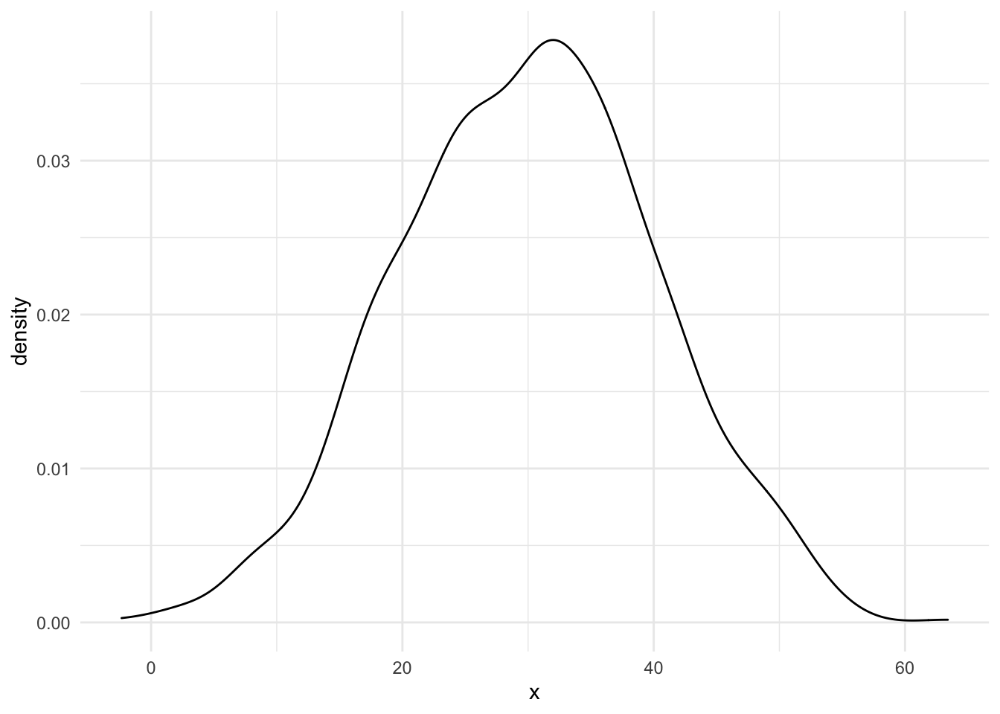

Overview
P-values are a term commonly heard in scientific literature, however often they are misconstrued, misunderstood or misinterpreted. The p in p-value stands for probability, as a lot of statistics begins with. What exactly does it tell us? Let’s find out
Formal Definitions
Hypotheses
Hypotheses are the best place to start for any science experiment or project. A hypothesis is what you are wanting to know. First you need to start with your research question. For example, are people who love lollipops older than people who do not? To do this, formally in statistics, we need a null hypothesis (\(H_0\)) and an alternative hypothesis (\(H_A\)). We will use two abbreviations here: LL for lollipop lickers and NLL for not lollipop lickers. We want to know “Are lollipop lickers older than not lollipop lickers?”
Re-phrasing this in statistically terms, $H_0$, is that there is no difference in age between the two. How do we measure age? For this example, we will use the mean age. So our \(H_0\) is no difference in age, how about our alternative hypothesis? Well this can be one of three options:
We think LL are older than NLL
We think LL are younger than NLL
We don’t know, but we don’t think they are the same!
1 and 2 are what are called one-sided hypothesis. A one-sided hypothesis, means you are assuming the difference is bigger or smaller. A two-sided hypothesis means, we don’t know!
\[ H_0: \mu_{LL} = \mu_{NLL} \]
\[ H_A: \mu_{LL} \neq \mu_{NLL} \]
Now, before we continue we need to review how okay we are with being wrong. Being wrong is okay, but there are two different types of being wrong.
Type I and II Errors
A type I error, sometimes referred to as \(\alpha\) error, is the error of saying something happened when it did not. For example, the error of me assuming you bought a balloon when you did not. A type II error, sometimes referred to as \(\beta\) error, is the error of saying something did not happen when you did. Using our balloon example, me assuming you didn’t buy a balloon when you did.
Power
The power of a statistical test is the probability that it correctly rejects the null hypothesis (Gelman and Carlin 2014). It is tied to the type II error, through the below formula.
\[ Power = 1 - \beta \]
Remember our lollipop example? For that it would be the probability that we can say lollipop lickers are not the same age as not lollipop lickers.
Test Statistic
Alright, I know at this point I’m boring you. One last definition and then we can get to the good stuff. A test statistic is exactly what it sounds like. A statistic used for tests! What kind of tests you may ask? Hypothesis tests like we have above. Now, the test statistic in itself may follow a variety of distributions depending on the test. I’ll leave distributions to another post.
Common test statistics include:
Z statistic
T statistic
For regression coefficients: \(\beta_1 / SE(\beta_1)\)
P-Value
The probability of such an extreme value of the test statistic occuring if the null hypothesis were true is often called the P Value Bland (2015). Similarly, the significance level
Significance Level
Remember \(\alpha\) from before? The type I error is sometimes referred to as the significance level. The number that is picked for the type I error is usually 0.05, however it is completely arbitrary to pick 0.05. It could be 0.20 or 0.02.
Important
There is no such thing as more significant. It is either significant at the level that was pre-specified before the analysis or not. For example: a p-value of 0.01 is not more significant than a p-value of 0.05
Normal Distribution
To begin, we need to start with some data. Who doesn’t love data right?
Issues with the P-Value
P-values are typically over emphasized. They are a piece of the puzzle, however they are not the whole puzzle.
Type M & Type S Error
Often type I and type II errors are highlighted however type M and type S errors are important to note as well. A type S error is the probability of an estimate being in the wrong direction (Gelman and Carlin 2014). A type M error is the factor by which the magnitude of an effect might be overestimated (Gelman and Carlin 2014).
Definitions are always great but an example helps to better understand. Without any further
References
Bland, Martin. 2015. An Introduction to Medical Statistics. Oxford university press.
Gelman, Andrew, and John Carlin. 2014. “Beyond Power Calculations: Assessing Type s (Sign) and Type m (Magnitude) Errors.” Perspectives on Psychological Science 9 (6): 641–51.